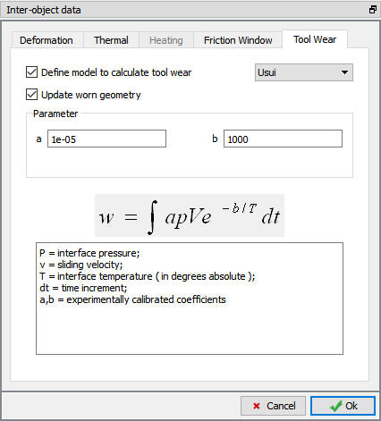

20.4. Tool Wear
20.4.1. Archard's model
20.4.2. Usui's model
[2D, 3D]: Tool wear can be calculated for tools which are in contact with other objects using wear models under Tool wear tab. There are two predefined models for predicting wear: Archard’s model and Usui’s model. In addition to Archard's
and Usui's models, user routine functionality has been also provided, where in user can evaluate any other model, using the basic model data like, sliding velocity, interface pressure and interface temperature. (See Fig. 20.4.1.).
Wear models can be defined for each pair of objects that come into contact during the process, they are defined under Inter-Object Data. Wear rates are computed for the master object in a relation, and that object must have a mesh (therefore heat transfer
calculations must be activated under Simulation Controls).
Typically, the coefficients used for these models should come from a series of calibration experiments. In lieu of calibrated data, standard values can be used to obtain relative wear rates for similar processes. Proper technique for the modelling of
coatings and surface treatments (such as nitriding) is still a topic of very active research. Therefore, comparison of the effects of different surface treatments is difficult without additional data. Contact DEFORM support at support@deform.com for assistance in finding the latest research in this area. Nonetheless, the following guidelines can be offered:
To use tool wear, the following conditions must be met:
-
Thermal calculations must be turned on.
-
The tool should be meshed.
-
The tool should have a hardness value defined under Elements Data Hardness.
Hardness.
-
The tool wear model should be turned on for the respective relation in the inter-object dialog and non-zero values should be placed for the tool wear model coefficients.
Note:
From DEFORM v11.0 the material hardness data must be specified at the material level.
This means hardness can be defined as a constant or a function of temperature.
The user can evaluate the total (integrated) wear depth up to a specified step for the process as well as the incremental wear depth for the time interval of the last step in the Post Processor. Additionally, the user can obtain the sliding velocities,
contact pressure and interface temperatures at the contacting die surface in the Post Processor.
This means for a given model for which deformation data has been computed, user can evaluate different tool wear models, without having to re-run the simulation. All the tool wear variables are stored for both the master and slave meshed objects.
Update worn geometry: User can turn on this check box to update the die geometry and mesh for meshed dies based on tool wear calculation. The geometry will be smoothened and updated with smoothing factor 5.

Inter object Tool wear window
Archard's model
Archard proposed a basic wear models based on the adhesion wear between the friction pairs. This model is generally better suited for discrete processes such as cold or hot forging. In these cases, abrasive wear is the dominant wear mode.
In the Archard wear equation, exponents a,b and c are dimensionless. If they are assumed to be 1 and K is assumed to be dimensionless, then hardenss [H] needs to be in units of MPa or KSI (depending on unit system).
Brinell and Vickers hardness values can be converted to units of MPa by multiplying the hardness values by the metric standard gravity value (9.80665 m/s^2). If units of KSI are desired, then perform an additional conversion from MPa to KSI.
Any hardness unit may be used in DEFORM, if it is used in conjunction with the coefficients that were calibrated to the specific hardness unit. For example, if coefficients were determined based on experimental HRC data, then the HRC hardness unit must
be used in the DEFORM simulation that uses those coefficients.
There is a specific inter-relationship between the hardness unit and the K coefficient unit. The units of the K coefficient will depend on the hardness units that were utilized during coefficient calibration. The hardness and K coefficient units must
provide a final wear rate in terms of Length/Time.
For Archard’s model, the following coefficients will give reasonable results for common tool steels:
a = 1
b = 1
c = 2
K = 1e-02 ~ 1e-03
If the K=1e-02 ~ 1e-03 value is used, then hardness values should be entered using the Rockwell C hardness scale.
It should be noted that these values are for qualitative comparison of similar processes only and will not give quantitative estimates of actual tool life.
Usui's model
This model is generally better for continuous processes such as metal cutting, where diffusion is a major contributor to wear.
For Usui’s model, typical values for machining processes are,
A = 1.0E-5 (or interface sliding velocity * interface pressure) -1
B = 1000 (order of magnitude of absolute interface temperature)
It should be noted that these values are for qualitative comparison of similar processes only, and will not give quantitative estimates of actual tool life.
Related Topics:
20. Inter-Object Data Definition
20.1. Friction and Contact criteria
20.2. Interface Thermal Data
20.3. Interface Resisitivity
20.5. Rigid Contact